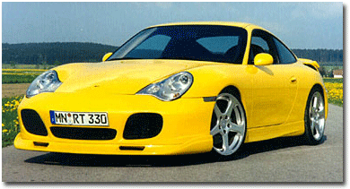

Ruf

The latest year 2003 release from RUF Automobiles. A RUF manufactured sports version of the 996 Carrera constructed on the basis of a natural aspirated engine, that has a dry oil sump with a separate oil tank. Built at the RUF headquarters in Pfaffenhausen.
The RUF RGT with an elevated power output of 395 bhp. This normally aspirated power-plant performance is achieved through equipping motorsports based engine with four new camshafts, a performance exhaust system, air filter and a re-mapped engine management system.